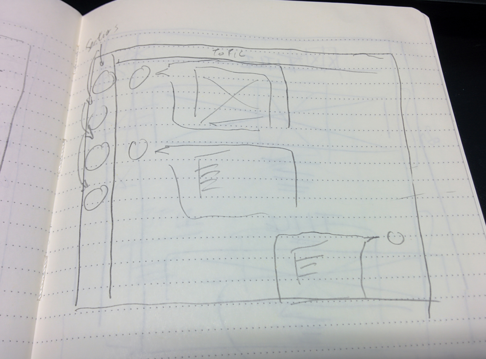
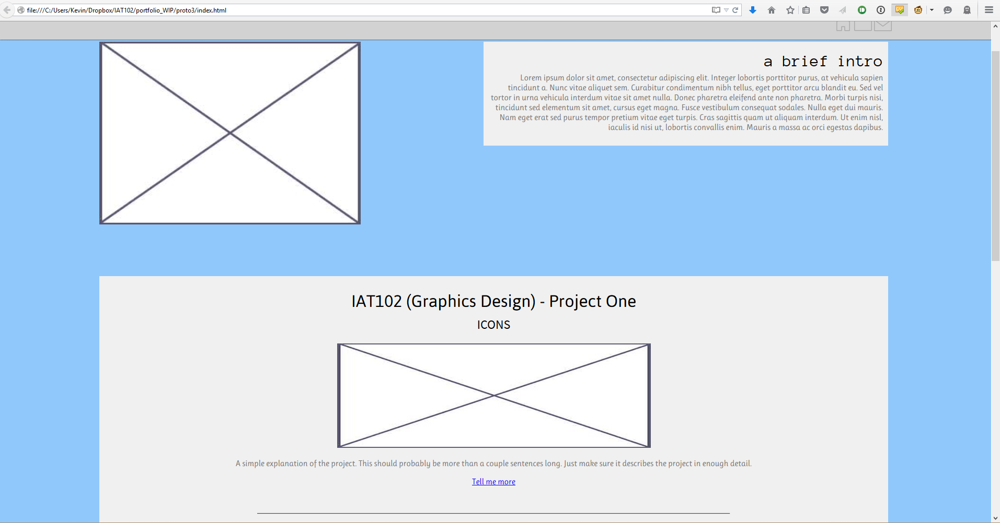

The goal of this project is to create a portofolio that showcases my work and design ethos.
First, I constructed a design ethos, that is, what I felt represented myself as a designer. For this, I chose fonts, colours, and images from projects that I would use for this portfolio. Afterwards, I sketched out 20 potential outlines for this portfolio.
Some examples of sketched outlines
I then decided to pick a sketch I liked the most, and worked with that.
The chosen sketch
I started out using Adobe Muse to create the site, but quickly found the limitations of the software to be very restricting.
Not what I was expecting
Hmm, let's try creating this from scratch.
Wow, that one's even worse
Ok, at this point I acknowledged that I may have overestimated my CSS abilities. Let's try for a new layout design, preferably something simpler.
Slightly better, but simple.
This is the first real prototype. While the functionality was there, the design was lacking on several fronts. First, there were many color inconsistencies, especially on the header and text backgrounds. Further, scalability was an issue: when full-screened, elements on the page would jump all over the place, resulting in a very messy looking page. Finally, the light blue background felt too bright; it made the site hard to look at over time.
Alright, let's start over again.
So meta.
The final recreation. Much, much better.
For this recreation, I took design advice from my classmates, and a recommendation to use a framework, and rebuilt this site using BootStrap.
Because of built-in capabilities of BootStrap, I was able to design the site with a lot more consistency. Using grids also allowed for scalability (rather than worrying about the particular amount of pixels on side margins).
I chose to create the site more minimalistically after providing feedback to my classmates' websites. I noticed how clean and professional looking those with minimalistic designs looked, and sought to recreate that feeling in my own site.
As a conclusion, after several iterations, I have a portfolio site I'm satisfied with. The main problems I had on earlier iterations were resolved through critiques by classmates and peers. While painful to read and hear at first, they were fundamental to eliminating issues I would otherwise not consider.